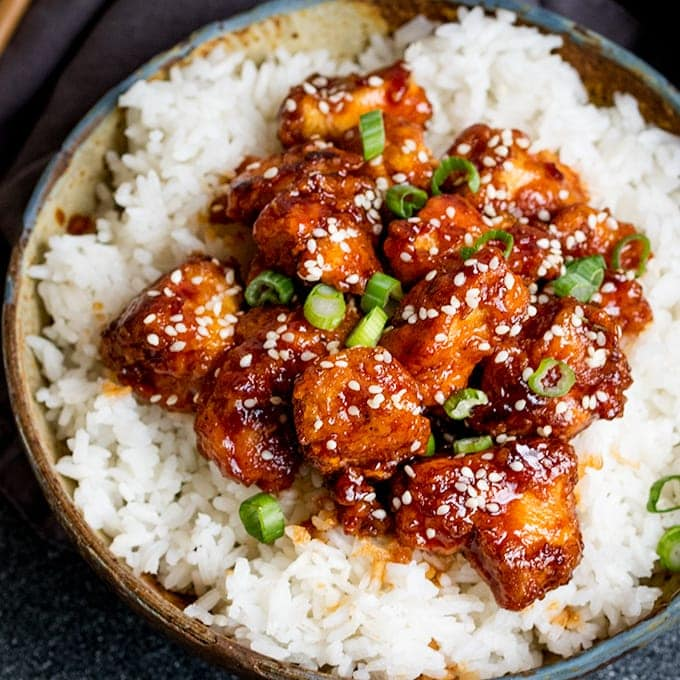

Sesame Chicken

Description
Sesame Chicken is tender and delicious with flavors of soy, garlic, ginger, brown sugar, and sesame seeds. This dish is perfect served over rice! Add in a side of steamed broccoli or some bok choy for an easy meal that’s both quick and delicious!
Ingredients
- Chicken
- Cornstarch
- Eggs
- Soy Sauce
- Rice
Steps
- Marinate chicken in cornstarch, egg, and soy sauce.
- Combine sauce ingredients (per recipe below).
- Stir fry in batches until browned. Add sauce and simmer.
- Garnish with sesame seeds and green onions.